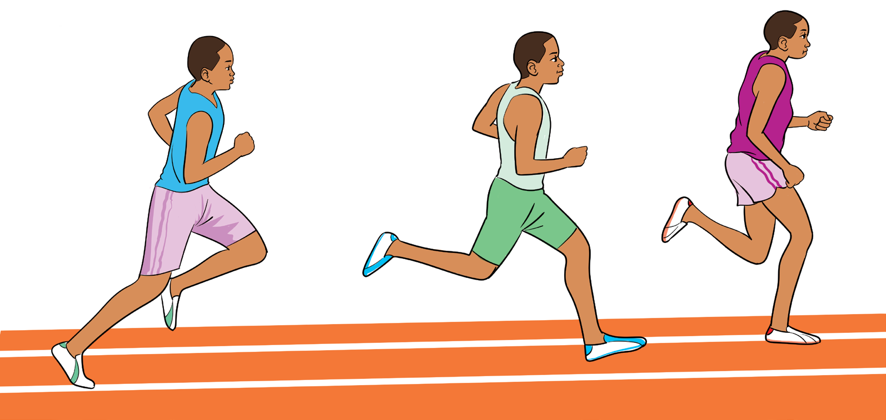

Synchronise your breathing
While running, breath in and out using both your nose and mouth to get the most oxygen into the body for energy production to maintain energy and stability.

Finishing 1500 m race
Usually, there is a sprint finish in the 1500 m race. There is an increase in pace by sprinting with force toward the finish line and lengthening strides in proportion to speed.
Activity 5.20
Practise 1500 m by observing techniques and rules of the race.
Question:
What are the factors that enable a runner to win 1500 race successfully?
Activity 5.21
Demonstrate how to officiate 1500 m by observing the rules and regulations of the race.
Question:
What are the criteria used to judge that a runner has crossed the finish line successfully in 1500 m race?